What a server needs from us, and what we give them today
An end-to-end audit of the staff app, the console, the training model and the market, with mockups and working prototypes of the changes that matter most. Built against The Social Corner's real install: 41 wines, 62 dishes, 20 cocktails, 7 staff, 246 card questions.
Every phone screen was captured at 390px as Elena (manager) and Priya (server), every console page at 1366px. Font sizes are measured from the rendered DOM, not eyeballed. Competitor prices are from their public pages this week; where a vendor hides pricing it says so. The prototypes below are static HTML in the app's own look, so they show the idea, not the code.
Executive summary
The product teaches well and reads badly
The learning model under Vinterest for Teams is better than anything on the market: a per-wine ladder, review dates from each answer's own stability, readiness measured against the role and tied to the till, a question check that catches giveaways before a server sees them, a guest who speaks. Nobody else has that combination (the competitor matrix below is explicit about it). The problems are in front of it: text too small to read on a shift, screens that stack three jobs where one belongs, and no answer to the question every server asks silently, "why should I do this?"
68%
of the Vinny tab's text is under 14pxThe worst screen after Wines (81%) and Team (75%). Body on the dark stage needs 15px minimum.
2
text inputs on one tabAsk Vinny and "Test me on…" both live on the Vinny tab, with the guest card under them. Three jobs, one screen.
0
places the app says what learning is worthReadiness is shown; money never is. The till data to say it is already in Sales Insights.
0
allergen questionsDishes carry diet but no allergens; the menu "module" is pairings only. Allergens are the one thing a venue is legally required to train.
8
options on a "choose one" recall questionEight 13px pills for one answer, and "How sure are you?" on every question. Fewer, larger, confidence only where it changes the stakes.
$79–149
per venue per month is the bandFlat per venue, unlimited staff. Nobody in wine training charges per venue with voice and till included; the general LMSs charge $3–7 per user without wine.
Ten things to do, in order
Readability pass on the dark stage. Body 15px, secondary 14px, caps labels 12px, 24px touch rows. Hierarchy by weight and colour, not by shrinking. One change, every screen. (Section: Phone audit)
Rebuild the Vinny tab as a practice hub. One card that says what to do now, three doors (Ask, Guest, Test), the chat and the test on their own screens. (Vinny tab, prototype included)
"What this is worth to you." A per-shift range from the venue's own till, with the caveats, on Today and on the drill summary. Not points, not a leaderboard. (Incentives, calculator included)
Menu training module. Allergens with sign-off, 86'd tonight, modifications, "why it works" for pairings. Dishes get the same ladder wines have. (Menu module, prototype included)
Pre-shift mode. A 90-second card at clock-in: tonight's 86'd, the two wines you're slipping on, one thing to say about the feature. (Training)
Drill recipe v2. Weakest-overdue first, one question per wine, at most two new, confusable wines interleaved in contrast rungs, days off pause the clock. (Training)
Coaching, one item per person per week. A leech (missed three times) becomes a manager's card with a done-tap and a two-week check. (Coaching)
Who can sell what tonight. Roster × top sellers on the console and on the manager's phone. (Measurement, prototype included)
Wine card v2. One telling detail at the top, the price as guests hear it, the name said aloud from the card, taste bars, a one-line story. (Wine cards)
Price it per venue. Starter US$79, Pro US$149 (voice, STT, till), Group from US$99 per venue at five venues on annual. 14-day trial, no card. (Pricing)
What not to do. Streaks (they punish the rota, not the person). First-to-last leaderboards (two people compete, five disengage). Money inside the app as a reward (FLSA and tip-pool trouble, and it cheapens the real number). A red backlog counter. Confidence ratings on every question. Each of these shows up in a competitor and each has evidence against it in the training section.
Screen by screen · the staff phone
Readability is the first fix, and it's one fix
The histogram below is measured: every visible text node on each screen at 390px wide, grouped by computed font size. The dark stage makes it worse than the numbers say, since 13px at 70% grey on near-black is harder to read than 13px black on white. A server reads this between tables, in a dim room, at arm's length.
Share of visible text under 14px, by screen
Source: computed font-size of every text node, The Social Corner, Elena and Priya. Counts, not characters, so a long paragraph at 15px counts once and a chip at 13px counts once.
The type scale to adopt
Now
Body and chips 13px, secondary 11px caps labels, 15px for the few headings inside cards.
Hierarchy made by shrinking: the less important a line, the smaller it gets.
Price, region, vintage, flag and drinking window share one 13px line in list rows.
Options in a drill are 15px, fine; their count (8) is the problem.
V2
Body 16px on reading screens, 15px in rows and chips; secondary 14px; caps labels 12px with letter-spacing; nothing visible under 12.
Hierarchy by weight and colour (white 600 against 70% grey 400), and by whitespace, never by going below 14.
Rows carry two lines, not one: name; then the one fact that matters for that screen (price on Wines, the pairing on Menu). The rest is on the card.
Touch targets 44pt; chips 36pt tall at least, so a chip is a button, not a label.
The consumer app's text-size setting (Standard, Large, Extra large) exposed on the staff app's person switcher. It's already in pwa-textsize.js.
Today
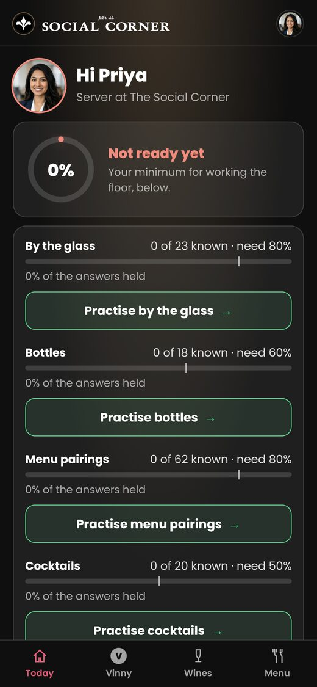
1
A new server's first screen is four zeros and "Not ready yet".Priya has done nothing wrong and the app already says she's below the minimum four times. Day one should be a plan, not a verdict: "Your first ten days: the 23 wines by the glass. Day 1: the sparkling." The readiness ring arrives once there's something to measure (after the first drill).
2
Four Practise buttons compete with "Start today's drill".The green outlined buttons are good, but a server scrolling sees five calls to action. Keep one primary (today's drill, which already chooses what matters) and fold the four parts into one row each with a small "Practise" link.
3
Nothing says why.No line about what this is worth to them, no mention of tonight. Two lines belong here: "Tonight: 86'd the ravioli; the feature is the Lambrusco" and "Servers who know the glass list sell about 0.9 wines a shift against 0.3" (from the till, see Incentives).
4
Manager's Today carries the KPI strip at 11–13px.Fine on the console; on a phone it needs the same two-line rows as everything else, and "Overdue 123" should never be a number a manager sees in a tile (below).
Wines and the wine card
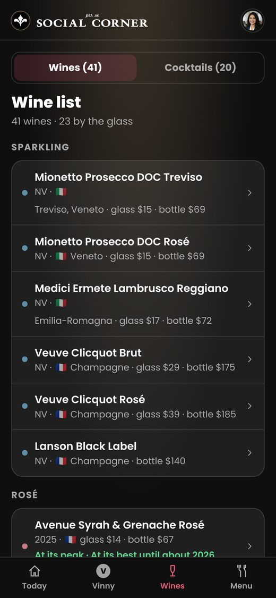
2
81% of the list is 13px.Each row packs NV · flag · region · glass · bottle (and a green drinking-window line on some) into one grey line. For a server the price is the fact; region and vintage can go to the card. Two lines: name 16px/600, then "glass $15 · bottle $69" 15px with the price in white.
2
No sense of what to learn first.The list is in menu order. A "For you" sort (your weakest sellers first, then what's assigned) and a dot per row for where you stand would make the list a study list, not a reference.
3
No search.41 wines is already a scroll; a guest is waiting. A search field at the top (name, grape, region, "under $60", "Italian") doubles as the quickest Ask Vinny.
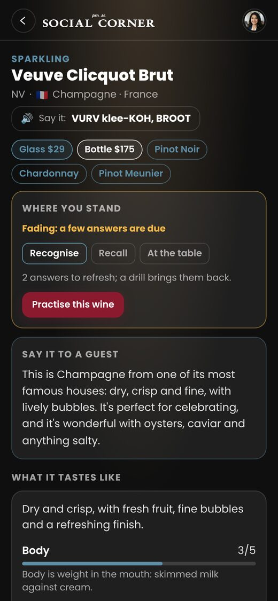
3
Price pills look like grape pills."Glass $29" and "Pinot Noir" are the same shape and colour. Price belongs on its own line, said the way a guest hears it ("$29 a glass, $175 a bottle"), and the grapes stay as pills.
3
"Where you stand" leads; the pitch should.The card's job on a shift is "what do I say". Lead with the 40-word pitch and one telling detail in bold; put readiness in a slim strip under the title (see Wine cards for the full v2 layout).
3
Say it is good; make it the whole name, slowly, then the sentence.The respelling guide helps, but the thing they'll copy is the voice. Two taps: the name alone, then "Could I suggest the Veuve Clicquot Brut?" as they'd say it.
The drill
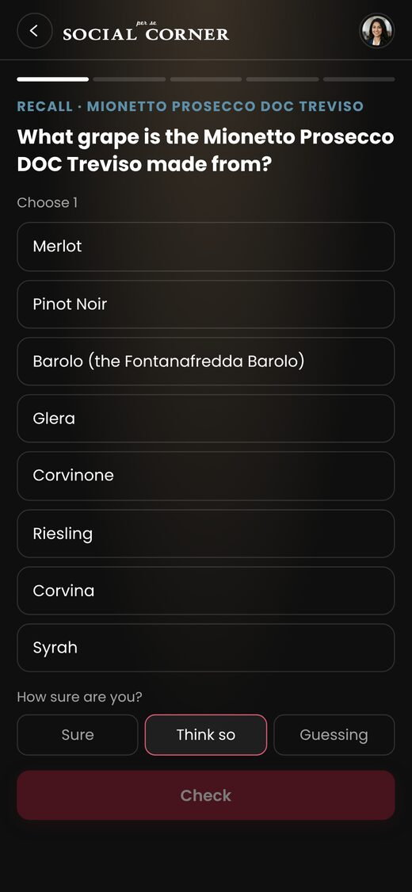
1
Eight options for "Choose 1", and one of them is a wine."Barolo (the Fontanafredda Barolo)" is offered as a grape. The decoy pool for grape questions is pulling a wine's name through _topicChoices. Cap recall at five options; the research on recognition tests is clear that beyond four or five, extra distractors add time and guessing, not discrimination.
2
"How sure are you?" on every question.Confidence-based assessment is worth it where being wrong costs something (allergens, prices, "can it be made without nuts"). On grape recall it's a tax of one extra tap times five questions times every day. Ask it on allergen and price questions only; elsewhere infer confidence from response time.
1
A new person's first drill is five sparkling wines in list order.Mionetto, Mionetto Rosé, Lambrusco, Veuve Brut, Veuve Rosé: the first five rows of the list. New items should be dealt from TeamReport.priority (what sells, what's assigned), one per section, and never more than two new items per drill once anything is due.
3
The question's wine is named in the kicker and the stem.Fine for recall. For recognise ("which of these is the dry one") it's the same wine, so a server learns to pattern-match the name. Rotate the stem so the wine is sometimes the answer, sometimes the subject.
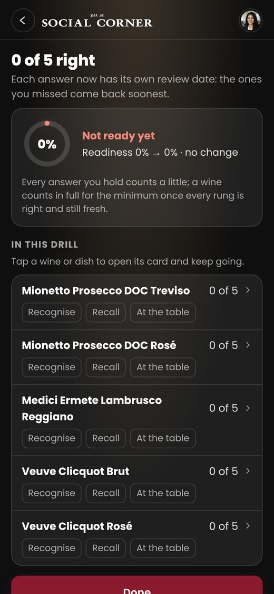
2
The summary explains the mechanism, not the result."Each answer now has its own review date" is true and nobody on a shift cares. The two things to say: what they got right in plain words ("You know the Lambrusco's grape now"), and when it comes back ("Two of these come back Thursday"). The mechanism can sit behind a "How this works" link once.
3
Rung chips repeat five times at 13px.One compact strip per wine (three dots, lit where held) says the same in a quarter of the space and at readable size.
3
No "worth" line.The drill summary is the moment to connect effort to money: "The Veuve Brut sells 40 glasses a week here; its sellers who know it sell twice as many." See Incentives.
Menu and dishes
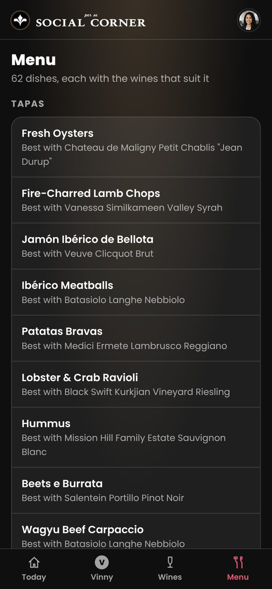
1
The menu is a pairing list, not a menu module.Each dish shows one "Best with", no price, no allergens, no diet marks, nothing about tonight. The diet field exists in the data and isn't shown. Allergens aren't in the data at all. This is the biggest content gap: see Menu module.
2
Dish pages have no "what is it".A server needs the dish's own line ("Red wine vinegar mignonette, piccante and horseradish") before the wine. The desc is in the data; the page leads with Say it and the pairings.
3
"Best with Chateau de Maligny Petit Chablis "Jean Durup"" wraps at 13px.On the list show the wine's short name (the card's say or a short form), the full name on the dish page.
Guest at the table
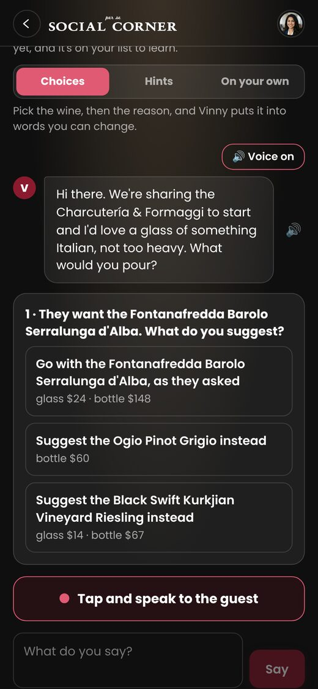
3
This is the best screen in the product.A real dish, a real request, prices as the guest hears them, the mark separate from the help level. Keep it. Three things would lift it: the help segment (Choices / Hints / On your own) explained once rather than on every table; the guest's bubble spoken automatically with Voice on (it is), with the text at 16px; "Tap and speak" and the typed field merged into one bar (mic on the left, text in the middle, Say on the right) so the screen has one way to answer.
3
No replay.After the mark, a server should be able to hear a model answer (the key, spoken) and say it again. That's the drill that moves delivery, and the STT and TTS to do it are already there.
Team, Upload, Cocktails
Team (phone) · 75% under 14px
A manager's phone version of the console table, in 13px. It should be the console's "What needs attention" list: one person per row, one tag, one tap to their drawer. The add-person form belongs on the console only.
Upload · 66% under 14px
Instructions in 11–13px around a camera button. Keep: one sentence, one button, the draft diff when there is one. The "two pages a call" and job steps are console material.
Cocktails · 67% under 14px
Same row fix as Wines. The cocktail card is the best-shaped card in the app (method, glass, garnish, the three-line pitch); copy its shape to the dish page.
The Vinny tab
Three jobs on one screen, in 13px
The Vinny tab is where a server practises, and it's the tab with the least room to read. It holds Ask Vinny (a text field and six suggestion chips), Vinny's test (a card with its own text field) and A guest at your table, stacked. Two text inputs on one screen is a sign the screen is two screens. The chips repeat long wine names ("Mionetto Prosecco DOC Treviso or Mionetto Prosecco DOC Rosé: the difference?") at 13px across two lines, and the thing the person should do today has no more weight than the thing they could do.
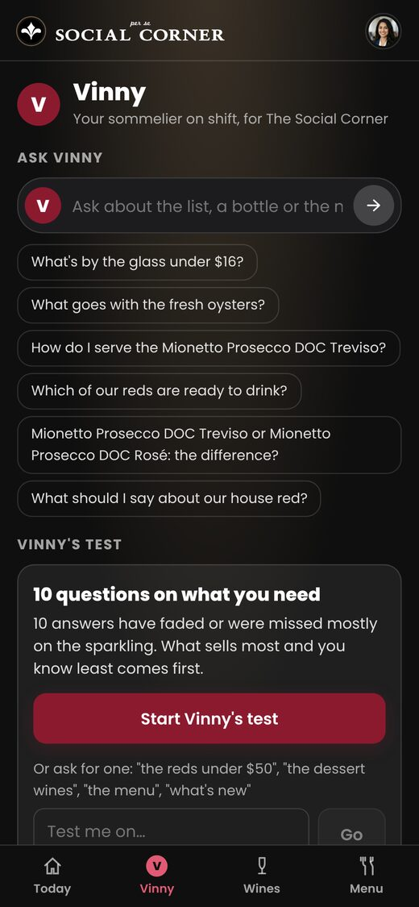
1
68% of the text is under 14px.13px chips (13 of them across the tab), 11px caps labels, 14px body in the test card. The one 22px element is the word "Vinny".
1
Two inputs, no priority."Ask about the list…" and "Test me on…" are both free text. A server opening the tab has to decide what kind of practice to do before doing any. The app already knows what they need (TeamVinny.test aims at faded and missed answers and what sells); it should lead with that.
2
Suggestions are generated, not chosen.Six chips, two about the same Prosecco, one that is 14 words long. Three suggestions, each under eight words, each about a different thing, one of them about tonight.
2
The guest is below the fold.The strongest feature in the product is the third section on the tab, after a card about a test. It should be a door at the top.
3
The header repeats."Vinny · Your sommelier on shift, for The Social Corner" takes 90px to say what the tab label says. One line, or none: the venue logo is already in the header.
The redesign: a practice hub with three doors
One card at the top says the one thing to do now, chosen by the app (today's drill if not done; a guest table if the drill is done; a refresher if something's fading). Under it, three rows: Ask Vinny, A guest at your table, Vinny's test. Each opens its own screen, where the input lives. The chat has the suggestions inside it (three, short), the test has its "Test me on…" inside it. Body text 16px, rows 16px, nothing under 14. The prototype is clickable: tap the rows and the chips.
Compare:
What changed and why
One next thing. The top card is LearnNext for staff: today's drill until it's done, then a guest table aimed at what they're weakest on, then a refresher. It shows the reason in a sentence ("12 answers are fading, mostly sparkling").
Doors, not sections. Ask, Guest and Test are rows with an icon, a title and one line of what's inside. Tapping one opens a screen with the input. No field on the hub.
Suggestions inside the chat. Three, chosen from tonight (an 86'd item, the feature, a top seller they don't know yet), each under eight words. Typing replaces them.
Guest first. It's the feature competitors can't match, so it's the second row and the hub's hero image when the drill is done.
Type scale. Hub rows 16px/600, descriptions 14px, chat bubbles 15px, chips 15px, caps labels 12px. The one thing under 14 is the nav.
"Worth" line on the hub. One sentence from the till under the next-thing card, with its caveat on tap. This is the only place money appears on the staff app besides the drill summary.
Where it lands in the code
The hub replaces the body of TeamVinnyTab in team-vinny.jsx; Ask becomes a screen (vinny-ask) with the current input and _VinnyAnswers; the test's "Test me on…" and Start move into a vinny-test screen; the guest keeps its screen. The next-thing card is a new pure function, TeamLearn.next(person), over drillDone, readiness, the fading count and TeamVinny.pickTable, so Today and the hub say the same. Suggestions become TeamVinny.suggest(person, tonight): three strings, deduped by wine, ordered 86'd → feature → weakest top seller → generic.
9:41●●●
⌂Today
VVinny
🍷Wines
🍴Menu
Clickable. Rows open their screens; ← returns.
Storyboard: a server's five minutes before service
Tonight's line first; the drill second; readiness third.
2The drill
1/5 · Recall · Lambrusco
What stops the fizz being sweet?
4 options, 16px, no confidence tap
Weakest-overdue first, one per wine, two new at most.
3Summary
4 of 5 · You know the Lambrusco's method now
Two come back Thursday
Lambrusco sells 31 glasses a week here
Result in words, next date, one worth line.
4Vinny hub
Next: a guest having the oysters
Ask · Guest · Test
The hub now suggests the guest since the drill is done.
5Guest, spoken
"Something crisp with the oysters, not Champagne prices?"
🎤 "I'd go with the Petit Chablis, $16 a glass…"
One answer bar: mic, text, Say. Then the model answer to copy.
6Back on the floor
Pre-shift card pinned on Today
Say it: Petit Chablis 🔊
The three things from tonight stay one tap away all shift.
The management console
Right numbers, wrong verbs
The console is in good shape structurally: a dashboard of foldable cards in the manager's own order, Sales Insights that reads like a briefing, a team table, drawers per person. The faults are in what the numbers ask a manager to do. "Overdue 123" is a number nobody can act on; "Training is worth 185% more sales" is a correlation said as a cause; and the dashboard has no "tonight".
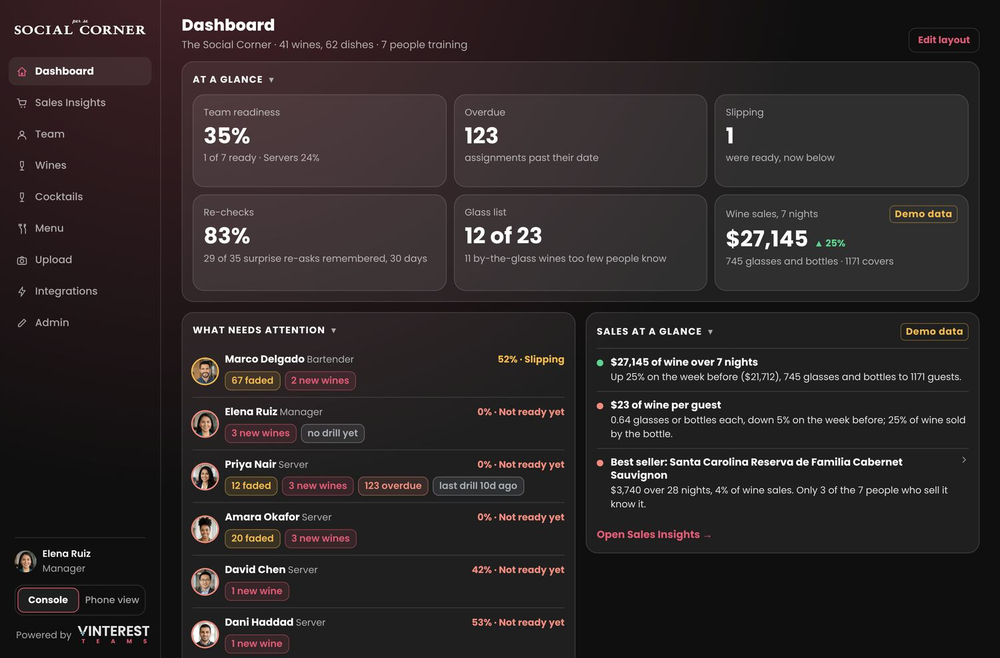
Dashboard as Elena, the manager. The layout and fold controls are from this week's work and they hold up.
Findings
1
"Overdue 123".Adding a person assigns the whole list and menu due in 7 days, so every new server is 123 overdue by day 8. A backlog counter in red is the single most demotivating pattern in this category (Duolingo's own research moved away from it; Axonify never shows one). Assign in waves: the glass list in the first ten days, bottles in the next, pairings after. Show "on track / behind by N days" per person, never a count of items.
1
"Training is worth 185% more sales".Servers who know a wine sell 0.86 of it a shift against 0.30. True, and the ones who know it are the ones who were already selling it. The caveat is there in small text; the headline should carry it: "Servers sell about 3× more of a wine once they know it (sections and shifts affect this too)". Section Measurement proposes the difference-in-differences version that can say "lift".
2
No tonight.The dashboard has 7-night and 28-night views and nothing for the next four hours. "Tonight: 5 on shift, 3 can sell the feature, nobody on knows the Nebbiolo" is the card a manager reads at 4pm (prototype in Measurement).
2
Re-checks 83% means nothing to a manager."29 of 35 surprise re-asks remembered" is a retention measure; label it so: "Retention: 83% of what the team learnt a month ago, they still know."
3
What needs attention lists people, not actions.Each row has tags (67 faded, 2 new wines). The row's right edge should be a verb: "Ask Marco to refresh the sparkling" with a done-tap. That's the coaching loop in Coaching.
What works, keep it
Sales Insights' "What you need to know": seven sentences, each opening what it's about. This is the right shape for every console page and for the weekly email.
The readiness bar per person with the state word (Ready, Slipping, Not ready yet). The states are the vocabulary; use them everywhere, including the phone.
Minimum to work the floor as role chips. Make them editable here (they're constants in TeamLearn.ROLES).
Demo data tags. Honest, and they should stay until the till is connected.
The venue's own logo over the sidebar, Vinterest at the foot. A manager showing this to their owner sees their restaurant.
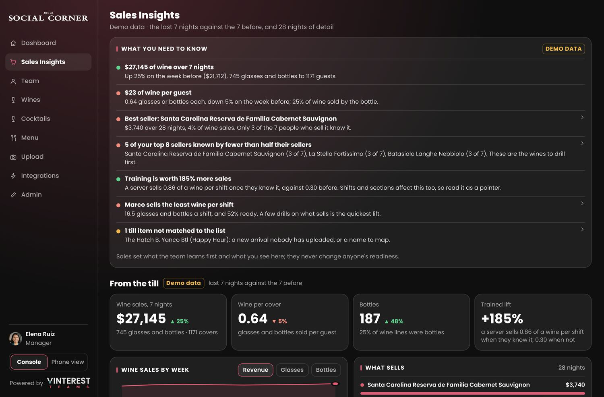
Sales Insights. "5 of your top 8 sellers known by fewer than half their sellers" is the most useful line in the product; it should also be a push to the manager on Monday morning.
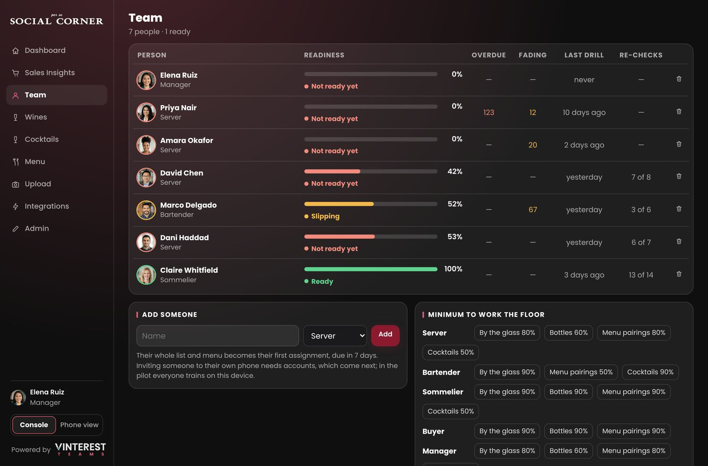
Team. Columns Overdue and Fading are counts; a manager needs "behind" and "slipping" as states and a reason on hover.
Console V2 in one list
Tonight card on the dashboard: roster (from the rota or picked by hand), 86'd, feature, who can sell what.
Waves instead of a 7-day cliff: assignment plans per role, editable, with a per-person "on track" state.
Coaching queue: one item per person per week, generated from leeches and sales, done-tap, two-week check (prototype in Coaching).
Allergen sign-off register: who passed the allergen set, when, exportable as CSV (an EHO asks for it; UK Natasha's Law and Canada's labelling rules make the venue liable).
Certificates and exports: "Ready for the floor" per person as a dated PDF, a CSV of readiness by week. Every LMS competitor has this and HR asks for it.
Roles and minimums editable on Admin, with a preview of who changes state.
Weekly email to managers: the seven lines of Sales Insights, the coaching queue, who went Ready. The Worker already sends mail for the consumer side through Resend.
Till connectors: Square first (OAuth, Orders API), then Toast and Lightspeed. Until then the CSV import stays and the item map is the manager's job; show unmatched items as a task, not a stat.
Training structure
The ladder is right. The deal, the dose and the tone need work.
What's there: a ladder per wine (recognise → recall → apply → contrast), roles needing different rungs, a review date per answer from its own stability (longer when right, more when late and right, shorter on a miss, a confident miss back within hours), readiness against the role minimum with partial credit, a five-question drill, unannounced re-checks, and a question check that rewrote 18 of 22 failing questions at The Social Corner before anyone saw them. That is a spaced-retrieval system on the venue's own list, which none of the eleven wine-training products surveyed has.
What the learning-science review says to change, with the evidence behind each:
1 · The deal
Today: assignments, then due, then new, with re-checks mixed in. Recommended order: weakest-overdue first (the due answer with the lowest stability), then due, then at most two new items, with one question per wine per drill and the new items dealt from what sells (TeamReport.priority), one per list section. Cap the dues at the drill length and roll the rest forward, so a day off doesn't produce a 40-question Monday. Days off pause the clock (a review due on a day with no shift is due the next shift, not "late").
Cepeda et al. 2008 on optimal gaps; Kornell & Bjork on interleaving; the "ease hell" pattern in Anki communities when overdue items stack.
2 · Contrast rungs pair confusable wines
The contrast rung asks about two wines. Pick the pair the till confuses or the list makes confusable: the two Mionettos, the two Veuves, Barolo against Langhe Nebbiolo, the two Rieslings. Confusable-pair interleaving is where the biggest gains in category learning come from, and it's free: the pairs are in the list.
Carvalho & Goldstone 2014; Birnbaum et al. 2013.
3 · Confidence only where it changes stakes
Drop "How sure are you?" from grape, place and style questions. Keep it (and make it count double) on allergens, prices and "can this be made without…". For everything else, response time under four seconds on a correct answer is a fine proxy for "sure".
Dunlosky & Rawson 2012 on confidence calibration; Axonify asks confidence on every question and it's the most-skipped control in their reviews.
4 · Explain-to-guest as a rung
Apply questions pick pills. Add a spoken (or typed) "explain it to the guest in one sentence" step on the apply rung for wines in the role's minimum, marked by the key words the card holds (TeamLearn.gradeChoices already does keyword marking). Generation beats recognition for retention by a wide margin, and it's the skill the job needs.
Testing effect meta-analysis, Adesope et al. 2017; Chi's self-explanation work.
5 · Leeches become coaching
A question missed three times running stops being dealt and becomes a line on the manager's coaching queue ("Priya can't place the Nebbiolo: taste it with her"). The app stops asking; a person helps; the app re-checks in two weeks. Anki calls these leeches and suspends them; we can do better than suspend.
6 · Pre-shift mode
A 90-second card at clock-in, no questions: tonight's 86'd, the feature with its one line to say, the two wines you're slipping on with their pitch, each with Say it. Operators already do this on paper at line-up; the app's version is personal and spoken. It isn't scored.
Trade practice: pre-shift tastings and one-page sheets are the common thread in every operator interview in the research.
7 · Tone of the mark
"0 of 5 right · Not ready yet · no change" on a first drill is three negatives in a row. Mark the drill in words about what's now known, show the next date, keep the readiness ring for the Today screen once it's moving. Self-determination theory: competence feedback that's informational ("you now know X") sustains effort; controlling feedback ("you are below the minimum") doesn't.
Deci & Ryan; Hattie & Timperley 2007 on feedback levels.
8 · Session length
Five questions is right (3–5 minutes). Add a "one more round" that deals five more from the same recipe, never a 20-question option. Make the drill resumable mid-way (a table arrives).
Question formats to add
Format
Rung
What it trains
Example at The Social Corner
Recognise, 4 options (today: 4)
recognise
The wine's kind and style
Which of these is the off-dry one?
Recall, 5 options max (today: up to 10 pills)
recall
Grape, place, method, price
What grape is the Lambrusco Reggiano?
Price ladder (new)
recall
Where the wine sits on the list
Put these four glasses in price order.
Explain to the guest (new, spoken or typed)
apply
The pitch in their own words
"The guest asks what the Petit Chablis is like. Say it."
At the table, pick + reason (today)
apply
Pairing and steer
Guest wants the Barolo with oysters. What do you say?
Steer with a budget (new variant)
apply
Trading down gracefully
"Something like the Veuve but under $100?"
Contrast, confusable pair (today, repaired)
contrast
Telling two apart
Mionetto Treviso vs Mionetto Rosé: which is drier?
Allergen check (new, confidence on)
menu
What's in the dish
Which of these contain shellfish? (choose all)
Modification (new)
menu
What the kitchen can change
Can the Calamari be made gluten-free? What do you say?
Tonight (new, pre-shift, unscored)
—
Service awareness
What's 86'd tonight?
The drill recipe, stated
Overdue answers, lowest stability first (one per wine or dish).
Answers due today, oldest first (one per wine or dish).
Assigned items not yet started, from TeamReport.priority, at most two, from different sections.
If fewer than five: review items whose date is nearest, as today.
One in five drills swaps a due item for a surprise re-check (CHECK_SHARE), as today.
Never more than five; a sixth-and-beyond due rolls forward without becoming "late".
On a day with no shift, nothing comes due.
Menu training module
Dishes need the ladder wines have
Today a dish is a pairing target: the menu screen shows "Best with", the dish page shows the wines and a Say it. The data has desc, main, cook, flav and diet, and the drill never asks about any of it. A server is asked about dishes far more than wines ("what's in it", "is it spicy", "can I have it without the cheese", "does it have nuts"), and one of those questions carries legal weight. Allergen training is the one thing a venue must be able to prove.
Data to add to each dish
allergens: the local statutory list (UK/EU 14, Canada 11, US 9) as codes, plus "may contain". The upload's menu reader (team_menu purpose) can draft them from the description and the kitchen confirms on the console, dish by dish, with a sign-off date. Never auto-published.
mods: what can change ("no cheese: yes", "gluten-free: no, the batter"), as short pairs the kitchen writes once.
ask: the two questions guests ask about this dish ("is it spicy", "how big is it"), from the server's experience, editable on the console.
status: tonight's 86'd, special, feature, with a time. Set from the console or the manager's phone at 4pm, or later from the till.
say: the dish in a sentence, as the card already has for wines.
The dish ladder
Know it: what it is, main ingredient, how it's cooked, size.
Allergens: choose-all with confidence, counts double, a miss comes back within the shift.
Changes: can it be made without X; what to say when it can't.
Pair it: the wine (today's apply question) and why it works (today's reasons).
Cocktail where the venue has them (today's "Cocktails with it").
Readiness gets a part, Menu, beside Menu pairings: a server needs the allergen rung on every dish at 100% before they're Ready, whatever else they know. That's the one hard gate in the product, and it's the right one.
Prototype: a menu drill
Four question types, each marked. The allergen question asks for confidence; the others don't. Tap through.
Design notes
Choose-all questions show a "N of M" count and a Check button; single-answer ones mark on tap, as the wine drill does.
The allergen verdict says the consequence, not the mechanism: "Fish sauce is in the dressing. A guest with a fish allergy needs to know."
Modifications are a "what do you say" with three replies, the same shape as the steer in the guest flow, so the muscle is the same.
The 86'd question is pre-shift only and never scored; it appears on the Tonight card, not in the drill.
The pairing-why answer options are the dish's real pairing reasons and the contradictions from other wines' cards (TeamLearn.styleWrong), as the wine drill builds them.
Dish and allergen content below is illustrative for The Social Corner's menu; the kitchen confirms the real allergens.
Sign-off register (console)
Person
Allergen set
Passed
Re-check
Claire Whitfield
62 of 62
12 Oct 2026
12 Jan 2027
Marco Delgado
58 of 62
4 outstanding
—
Priya Nair
20 of 62
in progress
—
Exportable as CSV and a dated PDF per person. The quarterly re-check is a setting.
9:41●●●
⌂Today
VVinny
🍷Wines
🍴Menu
Clickable. Four questions, then a summary.
The dish page, v2
1Lobster & Crab Ravioli
Mains · $34 · 86'd tonight
House pasta, bisque butter, chive. Rich, about 8 ravioli.
⚠ Shellfish · Gluten · Dairy · Egg
What it is, price, allergens, status: the first screen.
2Can it change?
No cheese · yes
Gluten-free · no (the pasta)
Smaller portion · yes, as a starter
Kitchen-written pairs. The drill asks these.
3Guests ask
"Is it heavy?" → rich but not large
"What's bisque butter?" → shellfish stock whisked into butter
The two questions servers actually get.
4Pour with it
Black Swift Riesling · $14 glass
Why: acidity against the butter, a touch of sweetness with the crab
Steer away from: the Barolo
Today's pairing, with the reason first.
Incentives
Say what it's worth, in their money, from their till
The research is consistent: specific floor recommendations move wine sales (Wansink 2006: +12% on a featured wine when the server recommends it, +7.6% with a pairing suggestion; Dewald 2008: 76% vs 70% of tables order wine with a sommelier present, average check $62 vs $55), while generic certification doesn't (Orlowski 2022: knowledge rose, sales didn't). The staff app never says any of this. A server who understands that the glass list is their tips, not the manager's homework, trains differently.
The right form is a range per shift from the venue's own till, with the caveat visible, never a promise, and never money paid inside the app. Pay stays with the venue's own bonus scheme (which has FLSA overtime and tip-pool rules in the US and tronc rules in the UK that we should stay well away from).
What this is worth to you
45 covers
$23 per guest
8%
18%
4 shifts
Extra wine sold, per shift
$83
Extra in tips, per shift (range)
$12–19
Per week
$48–76
A range from this restaurant's till: wine per guest is $23 now. The lift is what research found when servers recommend a specific wine; sections and nights vary. Not a promise.
Where it shows: one line on the Vinny hub ("Knowing the glass list is worth about $12–19 a shift in tips here"), expanded on tap to this card; one line on the drill summary about the wine just learnt ("The Lambrusco sells 31 glasses a week here"). Floor: four weeks of till data and at least two servers a side, else the line uses the research numbers and says so.
Recognition that works, and what to avoid
Do
Team recognition: "The team went from 35% to 60% Ready this month" on the dashboard and in the weekly email. Group progress is the gamification element with consistent positive evidence.
Wine of the week, a venue ritual the app supports: the feature gets a pre-shift card, a drill question, a sales line on Monday ("Lambrusco: 48 glasses, up from 31").
Contests run by the venue, with the app as the scoreboard: the till sales of the feature by server, for a week, a prize the venue chooses. Avero's operator reports +$45k on a wine contest; the Ranch's +14%. The app shows the board only while the contest runs, and the manager opts in.
Ready badge and certificate: a dated "Ready for the floor" per person, and the allergen pass, exportable. HR and the person both want it.
Milestones in words: "You know every wine by the glass" once, not a points total forever.
Avoid
Streaks. A server works four days a week; a streak counts the rota against them. Duolingo's streak works for a daily habit a person controls.
First-to-last leaderboards. Two people at the top compete; the five below stop looking. Opt-in team or section boards only, and only during a contest.
Points and coins. They substitute for the real number (tips) and lose to it.
Money paid through the app. Legal exposure (FLSA regular-rate rules, tip pools, tronc), and it makes us a payroll vendor.
Red backlog counts. "123 overdue" on day eight. Waves and "on track" instead.
Confidence on every question. One extra tap times every question is how daily use dies.
Coaching
One item, one person, one week
The app can tell a manager far more than a manager can act on. The coaching loop should give each person one thing a week, chosen from what the app can't fix by asking again: a leech (missed three times), a wine they sell least of among the top sellers, a delivery habit from the guest tables (fillers, a name lost), an allergen set not passed. The manager taps done when they've had the conversation; the app re-checks in two weeks and says whether it moved.
How it's built
TeamReport.coaching(): for each person, candidates scored by (sales weight × how stuck) with a tie-break for the oldest; one picked per person per week; stored in vbiz_coaching_v1 as {person, item, why, at, done, check}.
Candidates: leeches from TeamLearn (three misses running), bottom seller among the top eight (TeamSales), delivery trends (TeamVinny.deliveryTrend, only the trend, never the transcript), allergen rung incomplete, no drill in 10 days.
The check: two weeks after done, the same measure is read again and the card says "moved" or "still stuck" with the number.
On the manager's phone the queue is the Today screen's second card; on the console it's the first card of What needs attention.
Delivery coaching stays private to the person by default (as now); the manager sees a trend only when the person shares it from their own screen.
9:41●●●
This week's coaching
One thing per person. Tap done after you've talked.
Priya · Server
Taste the Langhe Nebbiolo with her
Missed its grape three drills running. It's your fourth seller and she's sold two glasses in a month.
DoneSkip this week
Marco · Bartender
Refresh the sparkling with him
67 answers fading, 40 of them sparkling. The Mionetto Rosé is the bar's top glass.
DoneSkip
Dani · Server
Allergens: 6 dishes left
Can't be Ready until the set is passed. Ten minutes with the kitchen's sheet.
DoneSkip
Checked · two weeks ago
David · the Petit Chablis moved
You talked on 20 Oct. He's sold 9 glasses since, from 1.
⌂Today
VVinny
🍷Wines
🍴Menu
Measurement, dashboards, database
Measure readiness in time, sales in lift, and tonight in people
The console measures readiness as a level. V2 should measure it as a rate (how long to Ready, how fast it decays, how often a re-check holds) and tie training to sales honestly. Three metrics carry most of the value:
Time to Ready
Days from first drill to Ready, per person and per role. The number a manager quotes to an owner ("new servers are floor-ready in 12 days"), and the one that shows whether waves and the recipe work.
Retention at 30 days
Share of re-checks held (today's "Re-checks 83%", relabelled). Falls when the review intervals are too long; rises with the pre-shift card.
Lift, diff-in-diff
For each wine: sales per shift by servers who learnt it, before and after they learnt it, against servers who haven't, same weeks. Says "Priya's Nebbiolo sales went from 0.3 to 1.1 a shift after she learnt it; the others stayed at 0.4", with a line that sections and nights confound it. Needs four weeks and two servers a side; otherwise the card says "not enough yet".
Prototype: who can sell what tonight
Tick who's on. The grid is the top sellers against the roster; the sentence under it is what the manager reads at 4pm. Green: Ready on that wine (every rung the role needs, fresh). Amber: slipping (held, but fading). Red: not yet.
ReadySlippingNot yetOff tonight
Built from TeamLearn.progress per person per wine and TeamReport.priority for the wines. The roster comes from a tap on the manager's phone for the pilot, from 7shifts/Deputy later. The same grid, one row, is the pre-shift card on a server's phone: "Tonight you can sell: …".
Database for V2
The pilot keeps one venue on one device (vbiz_* through Store). V2 means accounts, several phones and several venues, which means Supabase tables with row-level security by venue, the same way the consumer app's wines and user_docs work. Proposed, in the order they're needed:
Table
Holds
Notes
venues
name, brand, currency, country, allergen list code, settings (roles and minimums, waves, contest)
Row per restaurant; group accounts reference several.
members
venue, user, role, name, photo, active, hired_at
A user can belong to several venues (a group's sommelier).
items
venue, kind (wine, cocktail, dish), the list fields, status (live, 86'd, feature, retired), version
Replaces the three arrays; the draft/publish diff is a version column.
cards
item, the card JSON, say, questions, written_at, model
The event log everything else is computed from; never updated, only appended.
states
member, question, stability, due, misses, leech
The scheduler's view; recomputable from answers.
tables
member, dish, wish, help level, reply, mark, delivery (private)
Guest role-plays. Delivery readable by the member only (RLS).
sales_lines
venue, at, till item, item (mapped), qty, amount, server (mapped), shift
From CSV now, Square later. Mapping lives in item_map.
shifts
venue, member, date, section
From the rota or by hand; drives "tonight" and pauses the clock.
coaching
venue, member, item, why, at, done_at, check_at, moved
The loop above.
signoffs
member, set (allergens), passed_at, expires_at, exported_at
The register.
The Worker gains a /team namespace of routes that read and write with the service key under the member's venue, with the per-week fair-use counting the consumer side already has. Content generation (cards, pairings, fixes) moves server-side as jobs, so a publish no longer depends on the manager's phone staying awake; TeamJobs becomes a status reader.
Dashboards, V2
Dashboard: Tonight card first; then At a glance with Time to Ready, Retention, Team readiness; then coaching queue; then Sales at a glance.
Sales Insights: as now, plus a Lift section per wine (diff-in-diff with its caveat) and the contest board when one runs.
Team: states instead of counts (On track / Behind 3 days / Slipping), a person drawer with their ladder, their coaching history, their sign-offs, and an export.
Group view (multi-venue): readiness and wine per guest per venue, one row each, for the ops director.
Wine cards and menu items
The card's job on a shift is "what do I say"
The current card leads with Say it, then price and grape pills, then Where you stand, then the pitch, then taste with bars, then style, grape, place, producer, serve, dishes, alternatives. That's complete, and it's a study page. The trade practice from every operator interviewed says the same thing: one telling detail, plain words, the price as guests hear it, a line to say, the name said aloud. Reorder around that.
Card v2, top to bottom
Name, said. Title, the 🔊 that says the name slowly, the sounds-like under it in 14px grey.
The price line. "$29 a glass · $175 a bottle", 16px white. A guest's first question.
One telling detail, bold, 17px: the one thing a server can say that sounds like they know the wine ("Champagne's biggest house; the yellow label is the one on every wedding table"). Written by the card prompt as its own field, hook, max 18 words.
Say it to a guest: the 40-word pitch, with a 🔊 that says the sentence as they'd say it.
Taste bars (body, acidity, sweetness, tannin for reds, bubbles), with the one-line meanings from Palate.HOW: the consumer app's "teach while asking" rule applied here.
With the menu: three dishes with the reason first, and the one to steer away from.
If they want something else: the two alternatives with how they differ in a phrase ("drier and cheaper", "the same house, pink").
Where you stand: a slim strip, three dots, "Practise this wine" as a text link, not a crimson button.
The rest, folded: grape, place, producer, serving, the story.
The card prompt (prompts/team-cards.txt) gains hook; the respelling guide moves under the title. Nothing else is new content: it's the same card, reordered for a shift.
Menu items, the same rule
A dish page leads with what it is in a sentence, its price, its allergen strip and tonight's status; then what can change; then the two things guests ask; then the wines with reasons; then cocktails. Prototype in the Menu module section.
9:41●●●
Sparkling · Champagne
Veuve Clicquot Brut 🔊
VURV klee-KOH, BROOT
$29 a glass · $175 a bottle
Champagne's biggest house. The yellow label is the one on every wedding table.
Say it to a guest 🔊
"Dry, crisp and fine, with lively bubbles. It's the one for celebrating, and it's wonderful with the oysters."
How it tastes
Body3
Acidity4
Sweetness1
Acidity is the mouth-watering edge: lemon juice, not milk.
With the menu
Fresh OystersBubbles and salt; the acidity lifts the mignonette
Jamón IbéricoFat against fine bubbles, the classic
Steer away: Lamb ChopsToo light for the char
If they want something else
Lanson Black LabelSame style, $35 less a bottle
Veuve Clicquot RoséSame house, pink, $10 more a glass
●●○ You hold 2 of 3 rungs · Practise this wine
⌂Today
VVinny
🍷Wines
🍴Menu
Competitors
Nobody else puts the venue's own list, spoken practice and the till in one product
Eleven products were looked at in detail: five wine-specific trainers, four hospitality LMSs, two generic microlearning platforms that sell into restaurants, plus the scheduling and POS vendors adding training. The table shows what each has against what the job needs.
Product
Own list
Spaced review
Spoken role-play
Pronunciation
Till link
Dishes & cocktails
Question QC
Leaderboard
Certificates
Price
Vinterest Teams (today)
✓
✓ per answer
✓ marked, coached
✓ voice + check
✓ CSV
✓ all three
✓ 246 checked
—
—
pilot
ShiftTrained
✓ PDF upload
—
—
—
menu sync Toast/Square
menu quiz
—
✓
Wine Test
$29 / $49 / $99 mo
WineView
✓ synced to Toast
weekly courses
—
—
✓ Toast partner
wine only
—
manager report
—
undisclosed
Winebite
partly
—
—
—
—
—
—
—
✓
$119–289 per member
Quenchable (UK)
generic
daily drops
—
—
—
—
—
✓
—
~£4 / user / mo
Wine With Seth (teams)
generic
—
—
—
—
—
—
—
✓
$59 / seat
Typsy
video library
—
—
—
—
courses
—
—
✓
$20 / $75 per user mo
Axonify
custom content
✓ daily 3–5 Qs, confidence
—
—
via integration
—
—
✓ opt-in
✓
$3–7 / user / mo
Attensi
built per client
—
RealTalk voice
—
—
—
—
✓
✓
enterprise
1Huddle
custom games
—
—
—
—
—
—
✓ central
✓
$2.5–3K / mo
Trail / Flow / Mapal
compliance
—
—
—
ops data
food safety
—
—
✓ audit-ready
£38–82 / site / mo
7shifts Employee Training
upload
—
—
—
✓ with 7shifts POS
any
—
—
✓
~$150 / location (Premium)
Opus
custom
—
—
—
—
SMS delivery, 100 languages
—
—
✓
~$5 / user / mo
What they do well that we don't
Certificates and exports (everyone). HR asks for a dated record; we have readiness and no document.
No-install delivery (Opus by SMS, ShiftTrained by link, 7shifts inside the app staff already open). Ours needs the device in the pilot and the native app later; a web link per person that opens the staff app signed in would remove the biggest adoption step.
Multi-language (Opus 100+, Axonify). Kitchens and some floors are bilingual; the cards could be written twice by the same prompt.
Assignments with due dates and completion % as a manager's primary view (Axonify, Trail). Ours has them underneath; the waves proposal brings them forward.
Compliance content (Trail, Flow: allergens, food safety, licensing). The menu module's allergen rung is our version; the rest we shouldn't build.
Menu sync from the POS (ShiftTrained, WineView): the list updates itself. Our upload is a photo; Square's catalog API makes it a button.
Push and SMS nudges (all). We have the consumer app's push; the staff app needs its own: "your five for today", "the Lambrusco is on feature tonight".
Video and skills libraries (Typsy). Not worth building; worth linking to from guides.
What they get wrong that we should keep getting right
Generic content. Quenchable, Typsy, Wine With Seth teach wine; nobody at the table asks about wine, they ask about the Nebbiolo on the list. The Orlowski result (certification raises knowledge, not sales) is the whole case against generic.
Per-user pricing. Turnover in restaurants runs 70–100% a year; per-seat pricing punishes exactly the venues that need training most, and managers ration seats. Charge the venue.
Leaderboards as the engagement model. ShiftTrained, Quenchable, 1Huddle all lead with them. The evidence for competitive leaderboards is mixed at best and negative for the bottom half.
Questions nobody checked. AI-generated quizzes from a PDF (ShiftTrained) ship giveaways; our question check caught 22 in 246 before a server saw one.
Knowledge measured as completion. Trail and Flow count modules done; a module done in March is forgotten in May. Readiness that decays is the honest number.
Nothing spoken. Only Attensi has voice role-play, at enterprise prices and not for wine. Saying the name and the pitch out loud is the job.
Certification and study apps, for context
WSET Level 2 runs $398–595, Level 3 $1,099–1,258; CMS Introductory $649–949; GuildSomm $120 a year; Wine Folly+ $99 a year; Cork Dork $50 a year. These are what a sommelier buys for themselves. None are venue products and none of their users are the servers a venue needs trained. The one borrow: GuildSomm's question of the day and Wine Folly's taste bars and maps per wine, both of which fit the card.
Pricing
Per venue, unlimited staff, three tiers
The band in wine-specific products is $29–99 a month for a tool without voice or a till, and $120–290 per member for the ones with a human behind them. General LMSs charge $3–7 per user and need the venue to write the content. A product that writes the content from the venue's own list, checks it, speaks the guest and ties readiness to the till sits above ShiftTrained and below BinWise ($249). Charge the venue, not the head; that's what makes a manager add the dishwasher who wants to move to the floor.
Venues in a group:
US dollars; UK prices at roughly 0.8× (£59 / £119), Canada at 1.3×. AI costs per venue (cards, pairings, fixes, Vinny, voice) run well under $10 a month at Sonnet prices, so no per-question charges and no AI metering, which is what venues fear most about AI products.
Principles
14-day trial, no card, the venue's own list uploaded on day one (the first hour is the sale).
Unlimited staff on every tier. Turnover is the venue's problem, not a billing event.
Voice, speech-to-text and the till are what separate Pro; Starter is still the whole learning model.
Groups buy annual, per venue, with a group console. The first group (five sites) is worth more than twenty singles for the reference.
An onboarding fee only for a done-for-you list and menu check by a person (US$250), optional.